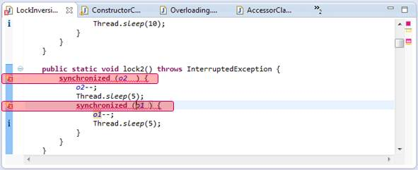
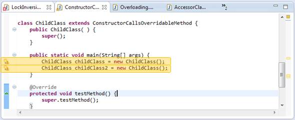
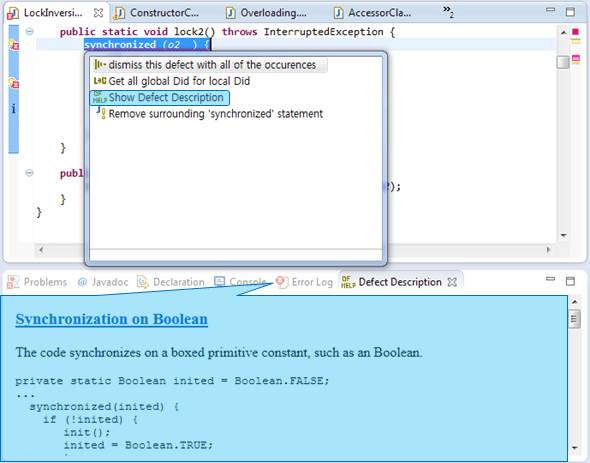

> Defect Description
You can check severity icons and color as below.
*
Critical
Defect in eclipse >>

*
Major
Defect in eclipse >>

When you want to check more defect information, click
Show Defect Description
on menu as below.


 Critical Defect in eclipse >>
Critical Defect in eclipse >>
 Major Defect in eclipse >>
Major Defect in eclipse >>